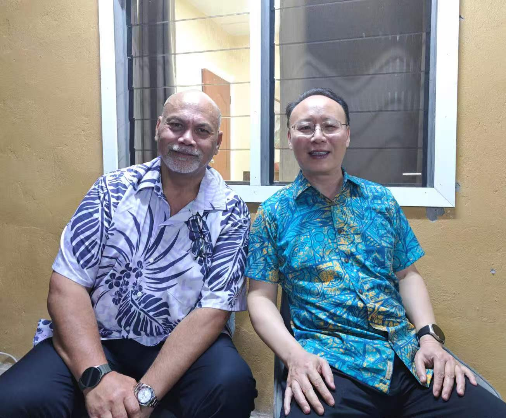

Last Week in the Pacific: Climate Cooperation Week and Ministerial Visits
In Tonga, Chinese Counselor Ruan Dewen visited the Tonga Broadcasting Commission (TBC).
TBC won a short video competition in Beijing late last year, and Ruan’s visit appears to build on that connection.
A video on the station’s social media account shows Ruan handing a check to TBC CEO Viola Ulakai after both officials signed documents.
Neither the embassy nor TBC has disclosed the size of the donation or the terms of any agreement.
Summary of PRC Activity
China and Fiji opened the 2026 China-Pacific Islands Countries Climate Action Cooperation and Exchange Week in Suva. In the Solomon Islands, the Chinese embassy attended handover ceremonies for PRC-funded development assistance, and the Ocean University of China signed an agreement with Solomon Islands National University. In Nauru, Ambassador Lyu Jin met with Foreign Minister Aingimea, one of several high-level diplomatic meetings across the region last week.
This Week’s Big Themes:
China-Pacific Islands Climate Week
PRC Chargé d’affaires in Fiji, Wang Yuan kicked off the 2026 China-Pacific Islands Countries Climate Action Cooperation and Exchange Week in Suva. The China-PICs Climate Action Cooperation Center, the Shandong provincial government, Liaocheng municipal government, and Liaocheng University jointly sponsored the event. Liaocheng University established the climate center in 2022 as China’s first multilateral platform for climate cooperation, with a mandate to deepen exchanges, conduct research, and deliver development projects in the Pacific. The permanent secretary of Fiji’s Ministry of Environment and Climate Change and the mayor of Liaocheng city also spoke at the opening. Organizers announced the establishment of the PICs Climate Change Adaptation Technology Innovation Center and pledged to deliver 100 small-scale climate projects across the region over the next three years. The program will continue in Vanuatu and the Solomon Islands.
Supporting Events
Diplomacy Within and Without the Embassy
The PRC Embassy in the Solomon Islands and other Chinese actors pursued several cooperative activities last week. Counselor Li Qinghua attended handover ceremonies under the Rural Sustainable Development Program in the Temotu Vatud and Temotu Nende constituencies. The PRC embassy funds the program, which the Solomon Islands Ministry of Rural Development implements through constituency development offices. In Temotu Vatud, the program delivered two sawmills and climate resilience construction materials worth roughly $190,000; in Temotu Nende, it delivered 21 boats and engines worth the same amount.
Separately, the Ocean University of China sent a delegation to the Solomon Islands National University, where the two institutions signed a memorandum of understanding establishing the Solomon Islands-China Ocean Research Centre. The Solomon Islands also hosted the 25th session of the Asia-Pacific Heads of Maritime Safety Agencies Forum in Honiara. Early reporting indicated that the Solomon Islands Maritime Safety Authority planned to sign a cooperation agreement with the China Maritime Safety Administration, though neither side has confirmed the memorandum.
Supporting Events
- Solomon Islands: RSDP Handover in Temotu Vatud
- Solomon Islands: RSDP Handover in Temotu Nende
- Solomon Islands: SINU MoU with OUC
- Solomon Islands: SIMA and CMSA Expected to Sign MoU
High-Level Political Access

In Nauru, PRC Ambassador Lyu Jin met with Foreign Minister Lionel Aingimea—who was shortly after appointed as Nauru’s inaugural Vice President. Lyu briefed Aingimea on the recent meeting between Xi Jinping and Kuomintang Chairperson Cheng Li-wen. The embassy readout states that “China is willing to continue working with Nauru on the basis of the one-China Principle” on cooperative activities—underscoring the centrality of the Taiwan question in China’s Pacific diplomacy. Aingimea affirmed Nauru’s adherence to the one-China principle and its willingness to strengthen multilateral cooperation with China. This exchange appeared only on the Chinese-language embassy website, suggesting the readout serve internal as well as external audiences.
In Papua New Guinea, the Silk Road Ark crew hosted a deck reception marking the ship’s departure, attended by Prime Minister James Marape and other senior officials.
In Samoa, Ambassador Fei Mingxing met with President of the Samoa Association of Sports Tuala Matthew Vaea.
Supporting Events
- Nauru: Lyu Jin Meeting with Minister Aingimea
- PNG: Silk Road Ark Ship Deck Reception
- Samoa: Fei Mingxing Meeting with Samoa Sports Association
* The PRC Pacific Embassies Monitor provides systematic, open-source tracking of Beijing’s public diplomatic activities across the nine Pacific Island Countries hosting Chinese missions. The monitor captures official embassy social media and website posts, supplemented by local sources, to offer a weekly structured intelligence report that bridges critical information gaps on regional engagement.